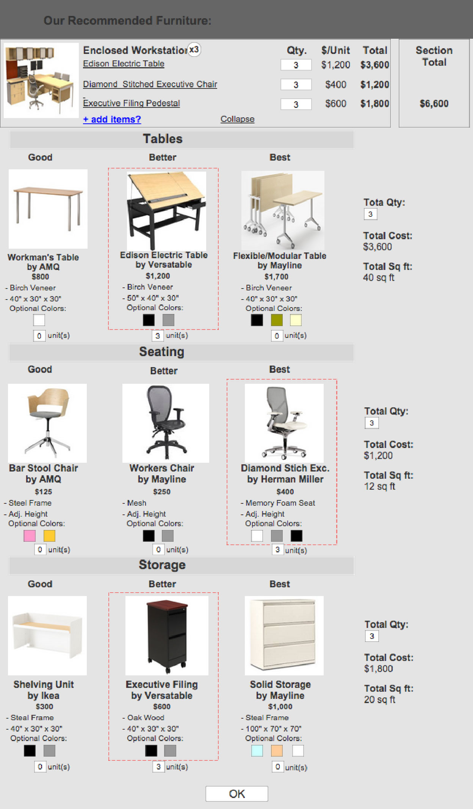

Problem Statement
How might we design a digital commercial furniture buying process tailored to our defined personas?
Ideate
Initially, we wanted to test two design ideas:
Point & Click (User Flow)
1) A “point and click" design for manual selection by the user.
PRO: Quick
CON: Little furniture buying website assistance

Guided (User Flow)
2) A “guided” design with a question set followed by a recommendation.
PRO: Assisted purchasing for the user
CON: A Longer process
USER TEST
We created and tested both prototype designs with an experienced furniture dealer and an experienced office manager.
What we discovered was those who are purchasing office furniture desire assistance. Purchasing furniture is a difficult and stressful process involving a good amount of company money. Those in charge of purchasing have many decisions to make and would like to lean on the help of an expert (in this case, PlanTheSpace.com).
With this in mind, we chose a very guided approach to the Desk Logic design.
Refined Problem StatementS
How might we design a digital commercial furniture buying process that leads our defined personas to a helpful recommendation?
How might we display our recommendation in a way that is understandable?
Ideate
Most of our time in this second iteration was spend figuring out essential information to extract from the user, and phrasing our questions in a simple fashion to obtain that information. We considered four categories most important in the furniture buying process and based our questions around them:
1) Vision
2) Space
3) Budget/Time
4) People/Culture
USER TESTING
We tested the prototype with small business owners. The “Programming” section tested very well. Some of our testers even said “wow, I never would have thought about this. That’s super helpful!”
The constructive criticism was based on the “Recommendation” section. They asked us to highlight the total cost better, more flexibility to change the recommendation, and a checklist to tie everything together.
Preview
The user should be informed on the process they are about to go through so they can anticipate what will be asked of them.

Vision
Pictures, rather than words, are used to describe the look each user is going for... Not everyone has the same idea of what "modern" is.
Programming: Understanding the Workspace
A series of screens which dives into the size of the space, the budget, the ideal delivery date, the number of people who need to be accounted for, and the overall culture.
(See prototype below)
Recommendation
Based on the user's input, a recommendation will be created that best suits their needs.

Adjust
The user has the ability to change their selection within the recommendation screen.

Final Prototype
See the Final Prototype Hereclose project